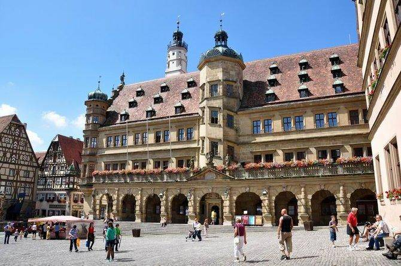

热门城市推荐
- 热门推荐
- 日韩、港澳台
- 东南亚及亚洲地区
- 欧洲
- 大洋洲 北美
- 非洲北美
-
全球Top10城市
-
免签及落地签最热旅行地
-
热门海岛
-
港澳台
-
日本
-
韩国
-
泰国
-
新加坡
-
越南
-
马来西亚
-
印度尼西亚
-
菲律宾
-
亚洲其他
-
意大利
-
英国
-
德国
-
法国
-
西班牙
-
瑞士
-
奥地利
-
俄罗斯
-
希腊
-
澳大利亚
-
新西兰
-
美国
-
加拿大
-
印度尼西亚
-
其他
-
摩洛哥
-
埃及
-
南非
-
肯尼亚
-
阿根廷
-
毛里求斯
-
智利
-
巴西
-
玻利维亚
-
厄尔多瓜
主体目的地
- 俯瞰城市
- 怀旧时光
- 魅力夜色
- 神秘遗址
- 跳蚤市场
- 最爱小镇
-

洛克菲勒观景台
这里是欣赏曼哈顿天际线的绝佳位置，观景台一共有三层，不仅可以将帝国大厦、 新世贸中心大楼等摩天大楼尽收眼底，向北可鸟瞰中央公园，甚至可以看到自由女神 像的绰约风姿。 -

碎片大厦
天气晴朗的日子里，在碎片大厦观景台 可以将伦敦市景一收眼底，伦敦眼、大本钟、泰晤士河…… 只描摹出城市轮廓的夕阳景色更是出众。 -

太平山
太平山是香港岛最高山峰， 也是俯瞰香港的必到处，太平山顶可饱览维 多利亚港全貌和薄扶林水塘的自然美景。 -

六本木新城
六本木Hills建成于2003年，54层楼的玻璃 大厦内有200多家店铺，餐饮、购物、娱乐一应俱全， 很多日本人将它当做六本木的代名词。 -

米开朗基罗广场
米开朗基罗广场位于佛罗伦萨市区南端的高地上， 广场雄据半山腰，坐视整个佛罗伦萨城及远处起伏不断的丘陵， 气势非凡，风光无限。 -

象山
山不高，但前无屏障，台北盆地一览无遗， 不仅是登高眺望的好据点，也是拍摄101高楼的绝佳地点。 -

蒙帕纳斯大楼
蒙帕纳斯大楼(又称蒙巴纳斯高楼)建于1972年， 共59层，高209米，是巴黎市区除埃菲尔铁塔外最高的建筑， 也是市区唯一的一座摩天大楼。
-
京都
春樱秋枫，神社古庙，古道旁，再现平安时代的风华盛景。 -

亚兹德
丝绸之路途中的千年驿站，沙漠中的古城。 -

马丘比丘
神秘的印加帝国遗迹。 -
蒲甘
千塔之城，每一座佛塔都是一段时光的记忆。 -
马六甲
追寻郑和的足迹。 -

罗滕堡
保存完好的中世纪风貌，保存完好的德国浪漫之路。 -
庆州
新罗时代的金城。
-

东京夜景
电影里的东京夜色令人无限向往，切身实地去感受东京的夜。 -
光影米兰
光与影的曼妙结合，在米兰的夜晚上演。 -
曼谷之夜
穿着人字拖，逛逛夜市，曼谷总是给人一舒服的感觉。 -

夜行首尔
夜晚的明洞，繁忙又热闹，首尔的独特也在其中。 -
不夜城香港
香港是个不夜城，夜宵美味，酣畅淋漓，夜不停息。 -
俯瞰夜巴黎
凯旋门、卢浮宫、埃菲尔铁塔，俯瞰巴黎夜色。 -
纽约酒吧
夜幕降临，你可以在酒吧中叫上三五好友一起嘬上一杯鸡尾酒或者啤酒，洗去上班或旅行的疲惫。
-
纳斯卡线遗址
存在了2000年的谜局，这些被镶刻在大地之上的神秘线条，至今仍无人能破解 ——究竟是谁创造了纳斯卡线条、它们又是怎样创造出来的、神秘线条背后意味着什么？ -
狮身人面像
狮身人面像简直就是三大金字塔的孪生兄弟，人们想起金字塔， 紧接着就会想起狮身人面像。狮身人面像又叫斯芬克斯，传说中是巨人和蛇妖所生。 -
图卢姆玛雅遗址
位于坎昆约130公里的加勒比海，是14世纪玛雅文化末期最繁荣的宗教都市遗迹。有高达3.3米高的石墙环绕。古城里的建筑都是用石头砌成的，雕刻着图案花纹。 据说，这是迄今墨西哥保存最好的一座玛雅和托尔特克人的古城。 -
马丘比丘
神秘的印加帝国遗迹。 -
奇琴伊察
奇琴伊察古城遗址是最出名的、也是修复的最好的尤卡坦玛雅遗址， 每个人都会伸长脖子看这个世界第七大奇观。 -

巨石阵
在一大片草地中，这些横着竖着的大石头看似毫无规律的摆放， 确是人类史的一大奇迹，考古学家认为其建于公元前3000年左右， 这些距今已经有4300年的巨石是如何搬运和抬放依旧是迷。 -
复活节岛
据人们推测，这些被称为摩艾的石雕像是岛上古老祭拜仪式的一部分， 它们制成于公元1250年至1500年之间。